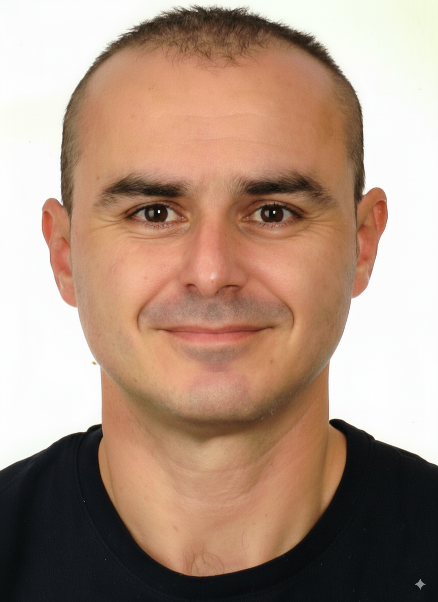

Técnico especialista en informática, aviónica y administración
Técnico especialista con más de dos décadas de experiencia en el mantenimiento, diagnóstico y resolución de averías en equipos informáticos y de aviónica. Mi trayectoria en las Fuerzas Armadas me ha proporcionado sólidos valores como la disciplina, el compromiso y el trabajo en equipo, habilidades que aplico en mi día a día.